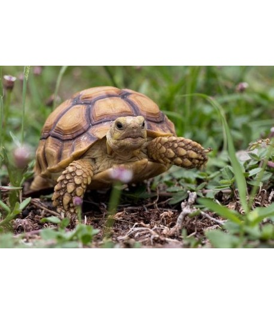
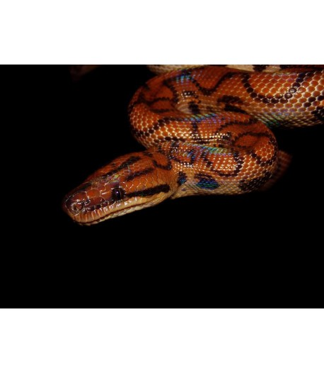
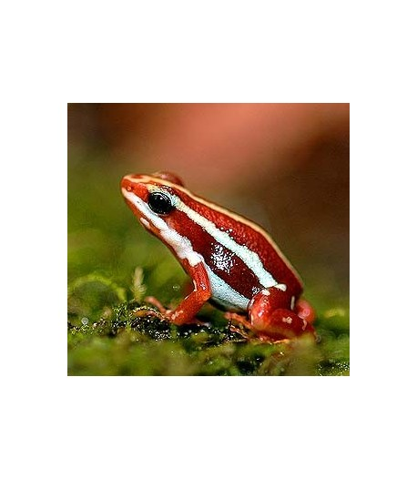
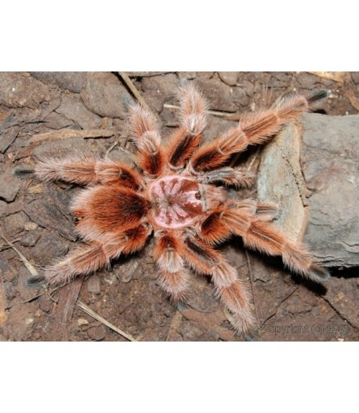
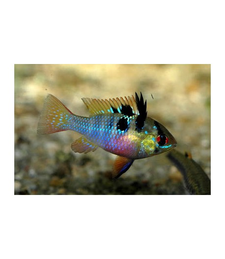
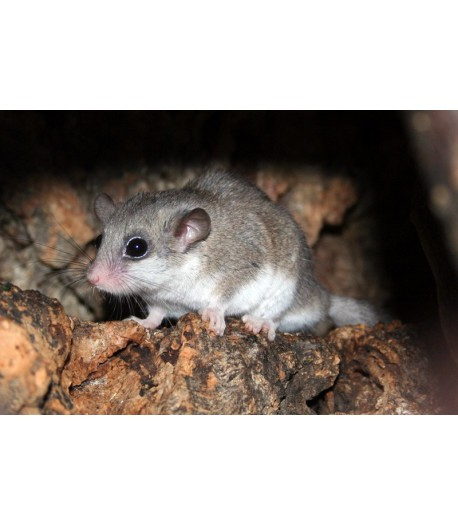

TARTARUGA DE ESPORAS AFRICANA
Espécie de tartaruga terrestre africana. É uma das maiores existentes e podem pesar entre 45 a 90 kg.
180.00€

BOA ARCO-ÍRIS
Espécie terrestre conhecida pela sua coloração estrutural irradiante. O brilho ao longo do dorso é semelhante ao arco-íris sendo a origem do seu nome.
250,00€

SAPO VENENOSO FANTASMA
Habitam as florestas tropicais e subtropicais assim como áreas desflorestadas (plantações de banana e cacao).
9,50€

TARÂNTULA CHILENA ROSA
É uma das espécies de tarântulas mais dóceis e fáceis de manter. Excelente para iniciantes no hobby.
30,00€

RAMIREZI AZUL, 3 - 3.5 CM
É uma espécie endémica do Rio Orinoco (Venezuela e Colômbia). É um peixe muito utilizado em aquários comunitários devido ao seu comportamento exuberante e reprodução.
3,50 €

LIRÃO
Pequeno mamífero noturno oriundo das florestas africanas. Tornam-se animais fáceis de manusear e mansos.
Todos os nossos lirões foram criados e nascidos em cativeiro.
30,00 €